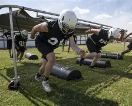

Travel, equipment, officials, facilities, and staffing each create different planning pressures.
Midwest athletic strategy group
Smarter Athletic Planning for Schools.
MASG helps school leaders organize athletic spending, participation, sponsorships, fundraising options, local support, and long-term program priorities into a practical plan they can use.

Travel, equipment, uniforms, facilities, and staffing all compete for the same pool of resources.
The challenge
Most departments have the data. They just do not have it organized into one planning system.
Budgets, rosters, fundraising, schedules, and replacement needs usually live in different places. MASG helps turn those pieces into one clearer operating view.
Total department spend does not always show where investment, risk, or opportunity sits.
Sponsors, fundraising guides, livestream inventory, camps, event nights, and community or local-government support options should connect to one plan that matches the school's actual scope and needs.
Fund efficiency story
Better visibility helps schools make funds work harder.
MASG does not treat every recommendation as a request for a bigger budget. The goal is to organize existing spending, event revenue, sponsorships, fundraising pathways, and cost pressure so more money can move toward athletes, equipment, and long-term stability. Where needed, MASG can also provide guides for fundraising options, sponsor outreach, community messaging, and ways to build local-government support behind a funding plan.
+$16Krecurring sponsor support
$9Kcost pressure redirected
$7.5Kplanned reserve target
Modeled funding shiftCurrent → Year 3
Show sport costs, event revenue, travel exposure, and replacement needs in one view.
Turn sponsorships, fundraising guides, livestream, event nights, grant-style asks, and community or local-government support options into coordinated funding channels.
Move gains toward equipment cycles, participation support, and a small athletics reserve.
Ready to scope it?
Start with a scoped quote conversation.
Compare plan options, estimate scope, and request a quote built around your school's needs on the Plans page.
Request a Quote